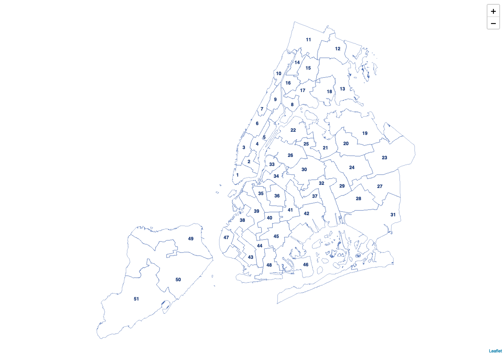

The councildown package implements style guide compliant defaults for R Markdown documents, ggplot2 plots, and leaflet maps.
Installation
You can install the released version of councildown from GitHub
remotes::install_github("newyorkcitycouncil/councildown")Load Package
Note that the order of loading the libraries is important. Make sure to load councildown last.
library(tidyverse)
# load last
library(councildown)Vignette
For a demo of the functions available, see vignettes/councilverse.Rmd in the councilverse package.
Quick Start
First load the councildown package as above.
ggplot2
On load, common ggplot2 scale_* functions are overwritten with scale_fill_nycc() and scale_color_nycc().
There are 6 color palettes available for scale_fill_nycc() and scale_color_nycc(). Check the documentation for full default parameters. For brand guidelines, see: https://newyorkcitycouncil.github.io/nycc-brand-guidelines/.
palette = "main" for use of primary Council colors. Default for scale_color_nycc().palette = "mixed" for secondary Council colors. Default for scale_fill_nycc().palette = "bw" for grey scale.palette = "warm" for a warm palette.palette = "cool" for a cool palette.palette = "diverging" for a diverging palette.
If palette = "single" then the color will be the first color of "main".
If palette = "double", then the color will be the first and second color of "main".
data.frame(x = rnorm(20), y = rnorm(20), z = c("a", "b")) %>%
ggplot(aes(x, y, color = z)) +
geom_point() +
labs(title = "Test",
subtitle = "Test",
caption = "Test",
color = "Legend",
x = "Test a",
y = "Test b") +
scale_color_nycc() +
theme_nycc()
Additionally, theme_nycc() has an argument facet for changing the theme to better fit faceted plots.
data.frame(x = rnorm(20), y = rnorm(20), z = c("a", "b")) %>%
ggplot(aes(x, y, color = z)) +
geom_point() +
labs(title = "Test",
subtitle = "Test",
caption = "Test",
color = "Legend",
x = "Test a",
y = "Test b") +
facet_wrap(~z) +
scale_color_nycc() +
theme_nycc(facet=TRUE)If you are only using one variable/color, you can add the "single" palette using pal_nycc. Use the "double" palette for two variables/colors.
data.frame(x = rnorm(20), y = rnorm(20)) %>%
ggplot(aes(x, y)) +
geom_point(color = pal_nycc("single")) +
labs(title = "Test",
subtitle = "Test",
caption = "Test",
color = "Legend",
x = "Test a",
y = "Test b") +
theme_nycc()leaflet
The function addCouncilStyle() sets the default view, zoom, and background. There is an additional option for add_dists to add map tiles and City Council district outlines and labels to leaflet maps. The dist_year option allows for "2023" or "2013" Council District lines.
library(leaflet)
leaflet() %>%
addCouncilStyle(add_dists = T, dist_year = "2023")
You may also use the add_council_basemaps function to directly add one or more of six different background maps to your leaflet map (1 = Dark, 2 = Light, 3 = Streets, 4 = Physical, 5 = Satellite, 6 = Basic).
library(leaflet)
leaflet() %>%
addCouncilStyle(add_dists = T, dist_year = "2023") %>%
add_council_basemaps(selection = c(1, 5),
custom_names = c("Default View", "Satellite View"),
control_position = "topright",
control_collapsed = FALSE)
Additionally, use mapshot to save leaflet maps as a static png image. mapshot() overwrites mapview::mapshot() to force map saves with standardized width, height, and zoom. Use mapview::mapshot if you want the original mapshot function.
map <- leaflet() %>%
addCouncilStyle(add_dists = T, dist_year = "2023")
mapshot(map, file = "map.png")